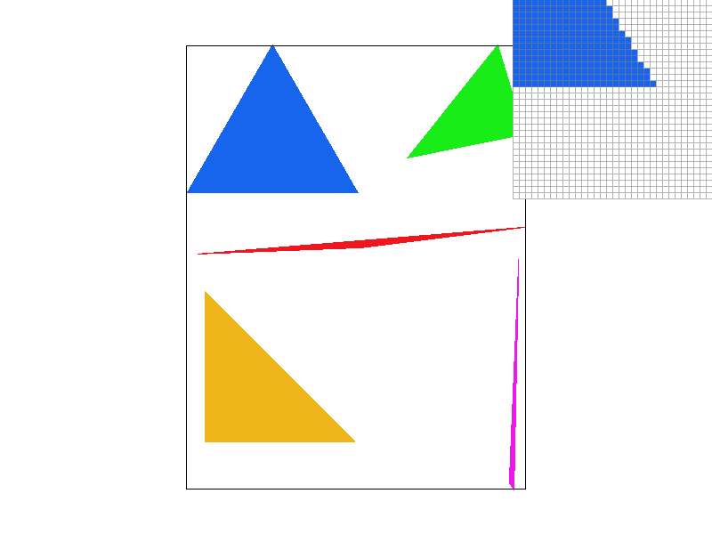

This project focused on triangle rasterization, transforms, barycentric coordinates, and texture mapping.
|  |
Points are given into the function RasterizerImp::rasterize_triangle() function in the file rasterizer.cpp.
The function takes in a colorvalue and three points representing a triangle in Cartesian space.
Determining if a point is inside a triangle is governed by the half-plane equations dictated below:
Correctly rasterizing the triangles requires that all normal vectors of the half-planes face inward.
In other words, the points fed into the rasterize_triangle() function
must be given in a counter-clockwise fashion. If the points are given in a clockwise order,
two of the points were simply swapped using swap() and the half-planes of the triangle were recomputed.
Points that fall within a triangle are given the same color, and the borders of the polygons are
filled in with fill_pixel(). The successful implementation of this function is seen in Figure 1.
In terms of speed, the algorithm for rasterize_triangle()
evaluates points within a bounding box around the triangle of interest.
To perform this task, the algorithm determines the highest and lowest
values in Cartesian space and rounds up and down respectively.